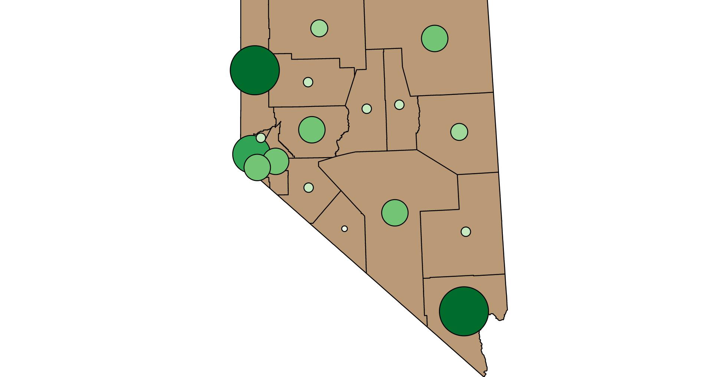
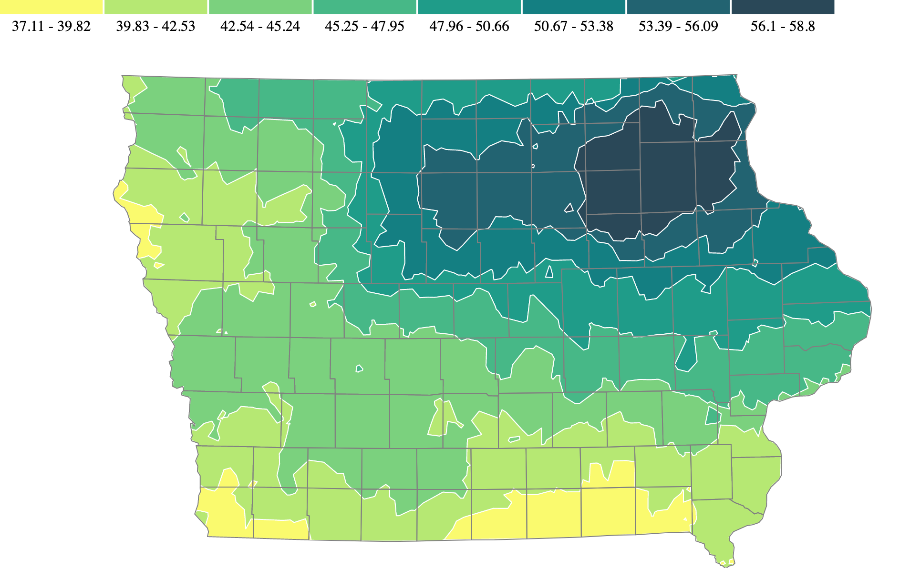
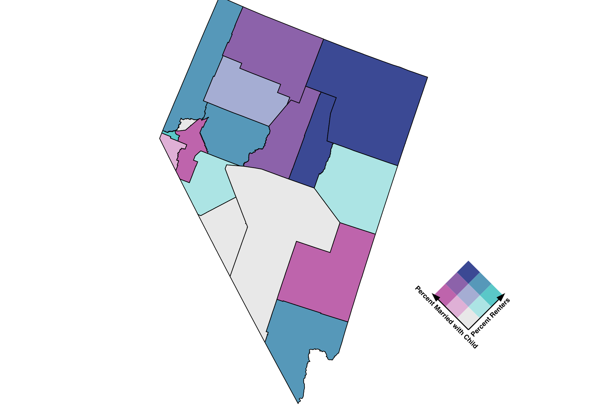

This portfolio contains the assignments completed during the spring 2021 term of Geographic Visualization
This choropleth map shows that Oregon has a proportionally low Black population throughout the entire state. The largest percentage of any census track is ~16% and occurs in the northwest/central area where Portland is located. This makes sense as many cities have larger minority populations. Oregon has a 3% Black population, so it would make sense that the Black population has proportionally low numbers throughout the state.

This point map shows that the spatial distribution of single mother households shows larger numbers in the southern and western portions of the state. This distribution makes sense because Las Vegas is located in Clark county (southern county) and has a large population. The western portion of the state contains Reno and Carson City, which are also two larger cities. Because the numbers used for this map were raw numbers, it would make sense that the cities with larger populations have larger numbers of single mother households. The central counties of Nevada have a pretty even spread, with larger counties having larger numbers of single mother households. This also makes sense as larger counties most likely have more people, and therefore more single mothers.

This isarithmic map was created by Dr. Caglar Koylu to display the yearly total precipitation in Iowa

This bivariate map shows the proportion of the population that is married with children compared to the proportion of the population that rents. Upon first review, there does not seem to be a clear spatial pattern when it comes to percent married with children and percent renters. It does appear that the northeastern part of Nevada has a high percent married with children as well as a high percent renters. The lowest values for both percent married and percent renters appear in the central-western portion of the state. Overall, there seems to be a mix when it comes to the combination of married families with children and renters in Nevada. It is challenging to identify the relationship without further variable analysis, such as the socioeconomic status of counties and the types of housing units offered per county.